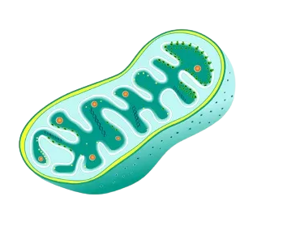

Conteúdo em breve...
Conteúdo em breve...
Conteúdo em breve...
Conteúdo em breve...
teoria endossimbiótica foi proposta por Lynn Margulis, em 1981, e admite que algumas organelas (mitocôndrias e cloroplastos) existentes nas células eucarióticas surgiram graças a uma associação simbiótica. Acredita-se que mitocôndrias e cloroplastos são descendentes de organismos procariontes que foram capturados e adotados por alguma célula, vivendo, assim, em simbiose.
Segundo a teoria endossimbiótica, podemos considerar que os ancestrais das mitocôndrias e cloroplastos eram organismos endossimbiontes, ou seja, organismos que vivem dentro de outro organismo. Possivelmente, a célula hospedeira era uma espécie de fagócito heterotrófico capaz de englobar partículas. Após englobar a célula, ela permaneceu mantida no citoplasma da célula hospedeira sem que houvesse degradação. Os dois organismos, então, começaram a viver em simbiose e, posteriormente, ficaram incapacitados de viver isoladamente. O procarionte provavelmente beneficiou a célula hospedeira com o processo de respiração (mitocôndria) e fotossíntese (cloroplasto), e a célula hospedeira fornecia proteção e nutrientes.
- Cloroplastos e mitocôndrias assemelham-se a bactérias em
tamanho e forma, além da semelhança genética e bioquímica, o que
sugere que possam ter ancestrais procarióticos;
- Cloroplastos e
mitocôndrias possuem DNA e ribossomos próprios;
- DNA de
cloroplastos e mitocôndrias são bastante diferentes daquele existente
no núcleo da célula;
- As duas organelas possuem o seu próprio
sistema de membranas internas e a presença de duas membranas
revestindo-as;
- Tanto cloroplastos quanto mitocôndrias possuem
capacidade de autoduplicação.